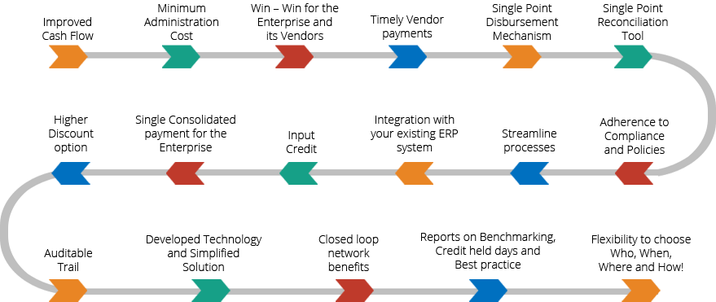

The transactional or process cost, of using a traditional procure-to-pay process, involving a requisition, purchase order, invoice and check payment—is the same regardless of the rupee value of the purchase. In other words, the process cost of 1000 INR purchase is the same as a 100,000 INR purchase. Estimates of the process cost of the traditional process range from 500 to 10,000 INR
Most organizations recognize that a large number of check payments are made for low-value items to a large number of suppliers—which is a costly, cumbersome and inefficient process. When the payment method is switched from the Traditional method to a V2p platform, efficiency savings range from 50 to 60% of the traditional process cost.
Overall, V2p provides means for streamlining the procure-to-pay process, allowing organizations to procure goods and services in a timely manner, reduce transaction costs, track expenses, take advantage of supplier discounts, reduce or redirect staff in the purchasing and/or accounts payable departments, reduce or eliminate petty cash and more.
V2p aims at identifying these pain points and evolving a solution that can provide flexible, transparent and compliant payment service, through various alliances. Some of V2p benefits.
